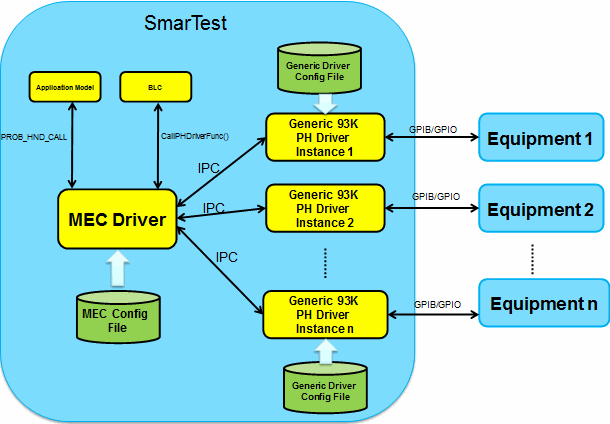
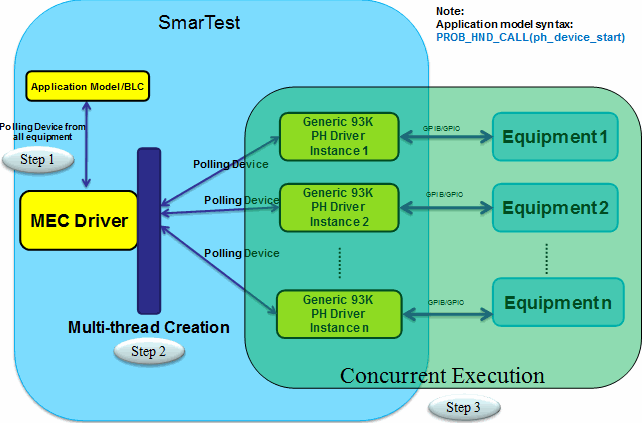
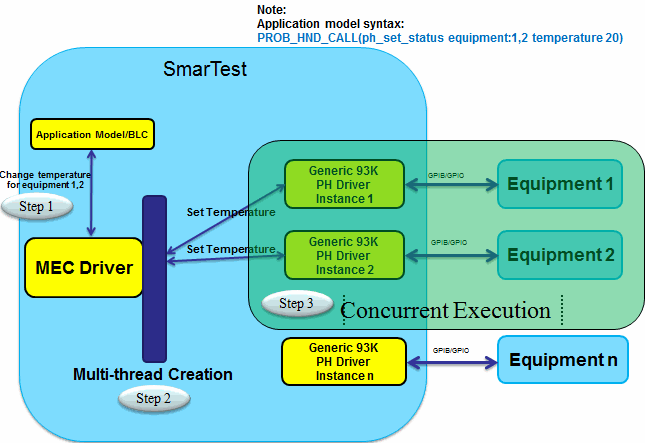
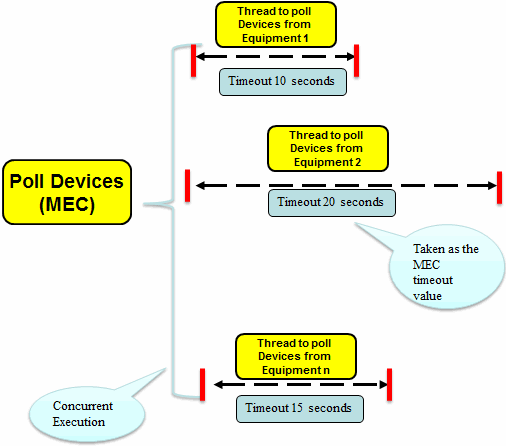
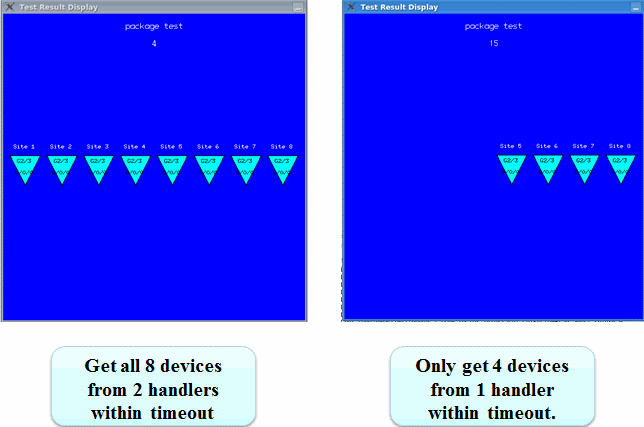

Multiple Equipment Control driver
Multiple Equipment Control (MEC) driver provides the functionality to manipulate multiple probers or handlers simultaneously from one 93000 test system.
The driver can be found in the directory /opt/hp93000/soc/PH_libs/Multiple_Equipments_Control.
The figure below shows how the MEC driver functions in the testing.

The MEC configuration file specifies the equipment to be controlled in the MEC driver and the
configuration to each equipment. The default configuration file is
/opt/hp93000/soc/PH_libs/Multiple_Equipments_Control/Multiple_Equipments_Configuration.cfg.
To use your own configuration file, specify the file with the environment variable as:
export MEC_CONFIG = path_to_the_MEC_config_file.
The prober/handler driver functions apply to all the equipment specified in the MEC configuration file by default. The figure below shows how the ph_device_start is executed on all the equipment.

To apply a function only on the selected equipment, you can specify the IDs of the selected equipment when calling the function. The figure below shows how the ph_set_status is executed to set the temperature for equipment 1 and 2.

The Generic driver plug-in configuration file defines the timeout related values and the site mapping between the equipment and SmarTest. The timeout value is configurable for each equipment. The site mapping is defined with the parameter "smartest_site_to_handler_site_map" in the Generic driver plug-in configuration file.
The timeout value for polling device can be set for each equipment with the parameter "waiting_for_parts_timeout" in the Generic V93000 PH driver plug-in configuration file. The MEC driver timeout for polling device is the longest timeout value defined among all the equipment.

If any devices are successfully polled from all the equipment, the test will be performed. If no device is polled from any equipment within the timeout, the MEC driver will continue polling until the next timeout happens. The figure below shows two results that may happen when controlling eight sites with two handlers.

Alarms and messages
- The MEC driver will automatically add the equipment ID to the warnings, errors, and messages printed in the UI report widow to make the information from different equipment distinguished.
- All the warnings and errors generated by the Generic prober/handler driver will be converted to the HVM alarm events to be captured by the external monitors.
- When the MEC driver gets the return value other than CI_CALL_PASS from the prober/handler driver functions, it will generate the HVM alarm event like "PH Driver Alarm(equipment:1)error executing function ph_abc".
- When the MEC driver fails to poll any device from all the equipment, it will generate the HVM Alarm "PH Driver Alarm(MEC):No devices got, try again".
Return value of MEC functions
- The return value of the MEC driver function is CI_CALL_PASS when one of the Generic V93000 PH driver instance returns CI_CALL_PASS. To retrieve the detailed return value from each driver instance, call the function ph_list_equipment() or monitoring the HVM Alarm Events.
- The output from the MEC driver function call looks
like:
(equipment:MT1)output_for_MT1(equipment:MT2)output_for_MT2...
Functional changes
- Introduced in SmarTest 7.2.2